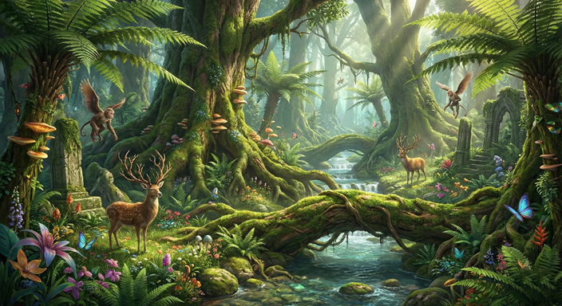
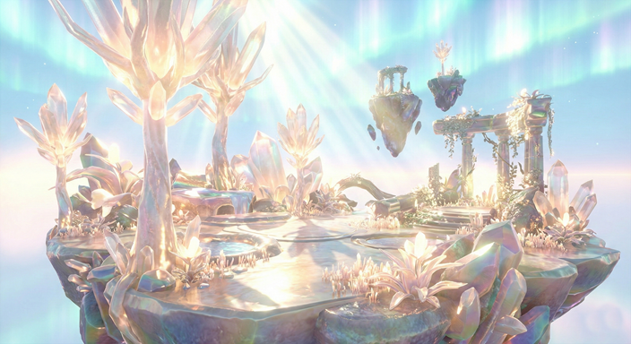
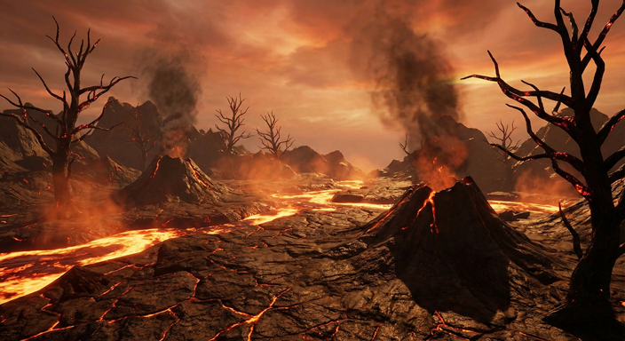
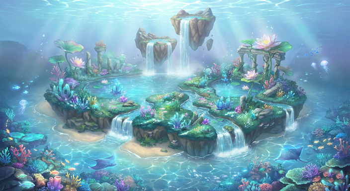
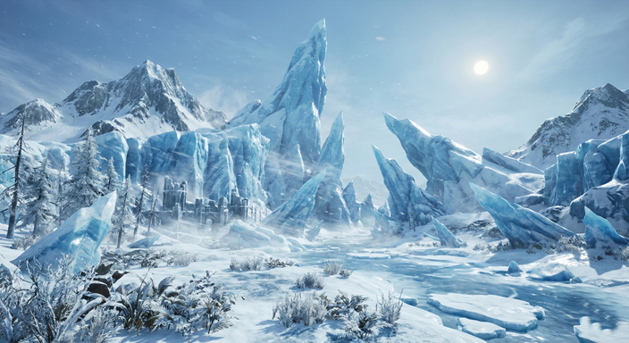
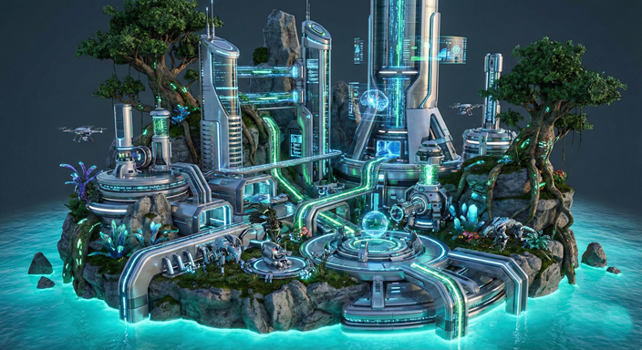
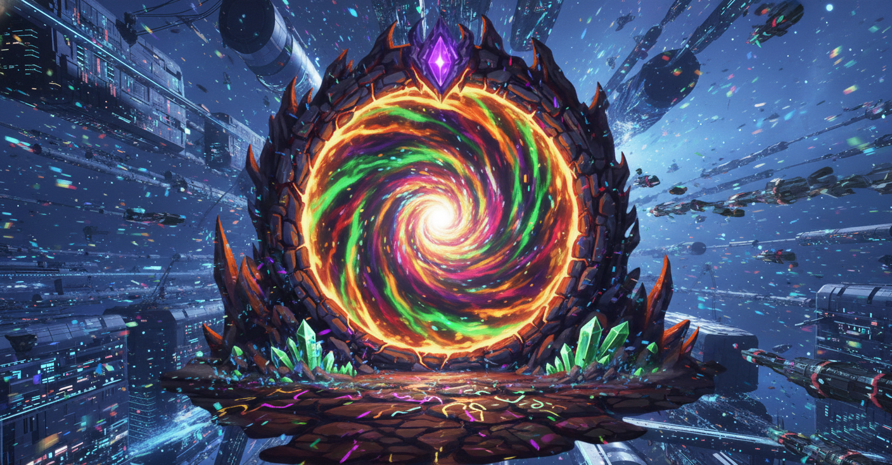

The Sovereign Regions
Explore the vibrant ecosystems of Eyuforyia, the mechanical blights, and the uncharted realms beyond.

The initial site of the invasion. Once filled with a telepathic hum, the forest's "song" is now forcefully harvested by alien Resonance Siphons.

A paradise of floating islands and crystal trees located high above the mechanical smog. It is ruled by logic and the detached Sky Queties.

An underground lava castle where Magma-Pangolins live. The invaders have breached it to forcefully siphon the planet's internal heat.

The remnants of an ancient civilization beneath the waves. Massive alien suction tubes are draining the ocean, turning it into sterile "Dead Water".

Home of the great slumbering Behemoths. The air here is kept artificially dry by alien stabilizers to protect their machinery from rusting.

A domain of natural shadows ruined by alien Light-Spires. The harsh, unnatural glare traps the nocturnal inhabitants in a state of waking madness.

The mechanical epicenter of the invasion and the final scar on the surface. This fortress houses the central AI processor that controls the corruption.

A vast desert of pulverized crystal where the alien harpoons shattered upon impact. The air is thick with refracted light and temporal anomalies that scramble AI targeting systems.

A sector where the Central AI's "Optimization" code fatally collapsed. It is a hazardous, jagged landscape of shifting geometry, corrupted metallic flora, and unstable gravity.

An endless cavern system extending miles beneath the Sunken Ruins. The invaders refuse to deploy drones here, fearful of the massive, ancient entities that glide through the absolute dark.